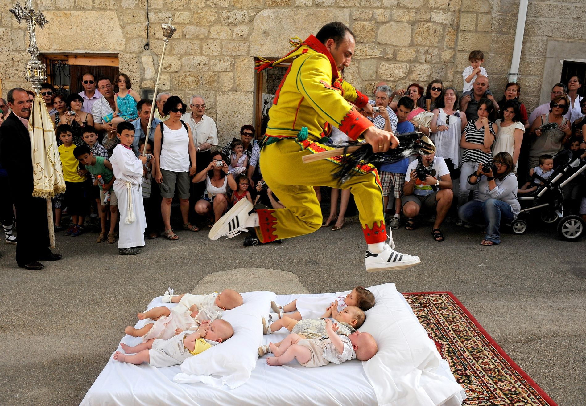

Video-presentacion Burgos
Si el video no se reproduce correctamente pulse aqui
- Localizacion
- Localidades principales
- Geografia de la provincia
- Historia
- Cultura
- Naturaleza
- Tradiciones
- Otros aspectos de interes
LOCALIZACION
La provincia de Burgos se localiza en la parte norte de la península ibérica, en la región histórica de Castilla y desde 1983 integrada en la comunidad autónoma de Castilla y León. Limita por el norte con las comunidades autónomas de Cantabria y del País Vasco, donde la cordillera Cantábrica juega el papel de frontera natural entre la Meseta Norte y la costa cantábrica. Por el oeste limita las de Valladolid y Palencia; al este con el extremo superior de la cordillera Ibérica, que la separan de la comunidad autónoma de La Rioja y la provincia de Soria y al sur con la provincia de Segovia.
Mapa
Si el mapa superior no funciona haga click aqui
Ir arriba
LOCALIDADES PRINCIPALES
- Burgos ---> 174 051 habitantes
- Miranda de Ebro ---> 35 528 habitantes
- Aranda de Duero ---> 33 084 habitantes
- Briviesca ---> 6465 habitantes
- Medina de Pomar ---> 5834 habitantes
- Villarcayo de Merindad de Castilla la Vieja ---> 4029 habitantes
- Valle de Mena ---> 3987 habitantes
- Lerma ---> 2609 habitantes
- Roa ---> 2196 habitantes
- Alfoz de Quintanadueñas ---> 2163 habitantes
- Salas de los Infantes ---> 1980 habitantes
- Villagonzalo Pedernales ---> 1853 habitantes
- Arcos de la Llana ---> 1816 habitantes
- Belorado ---> 1754 habitantes
- Espinosa de los Monteros ---> 1674 habitantes
- Quintanar de la Sierra ---> 1596 habitantes
- Melgar de Fernamental ---> 1553 habitantes
- Villadiego ---> 1484 habitantes
- Villalbilla de Burgos ---> 1454 habitantes
- Ibeas de Juarros ---> 1438 habitantes
Ir arriba
GEOGRAFIA
Con una superficie de 14269 km², la Meseta propiamente dicha abarca sólo la mitad SO. de la provincia, región de páramos y llanuras, constituida por sedimentos terciarios de la depresión del Duero, disecados por este río y sus afluentes.
De la Cuenca del Duero forma parte La Sierra, básicamente del partido de Salas de los Infantes, las Comaracas de Villadiego y de Castrojeriz, el Alfoz de Burgos en el curso del Arlanzón, las Tierras de Lerma regadas por el Arlanza y la Ribera del Duero, a uno y otro lado de Aranda de Duero.
El Sistema Ibérico que penetra en Burgos por los altos páramos de la Lora, prolongando los altos niveles de la paramera hasta el sur de la capital. A este Sistema pertenece la Sierra de la Demanda, con una de las máximas elevaciones de la provincia el Pico de San Millán (2.134 m) límite de Burgos con La Rioja y Soria.
Entran pues en la provincia tres importantes unidades geográficas: la España húmeda, el valle del Ebro y la Meseta, lo que hace de Burgos una encrucijada de varios paisajes; se suceden altas montañas, como las de la sierra de la Demanda, picos de Urbión (2.253 m), montes de Oca (996 m.), Peñas de Cervera (1.413 m) o sierra de Covarrubias, altas mesetas o páramos, desfiladeros, corredores, valles y campiñas fluviales.
Tiene una compleja y rica diversidad morfológica y de relieve en la que se alternan los materiales calizos y arcillosos.
El Duero y el Ebro cruzan los extremos opuestos de la provincia, dividiéndola en dos cuencas. Los afluentes del Ebro son los más caudalosos (Oca) y los del Duero los más largos (Arlanzón, Arlanza, Esgueva).
CLIMA
En Burgos, los veranos son cortos, calurosos, secos y mayormente despejados y los inviernos son largos, muy frío, ventosos y parcialmente nublados. Durante el transcurso del año, la temperatura generalmente varía de -1 °C a 27 °C y rara vez baja a menos de -6 °C o sube a más de 33 °C.
La temporada templada dura 2,7 meses, del 20 de junio al 11 de septiembre, y la temperatura máxima promedio diaria es más de 23 °C. El mes más cálido del año en Burgos es agosto, con una temperatura máxima promedio de 27 °C y mínima de 12 °C.
La temporada fría dura 3,8 meses, del 14 de noviembre al 7 de marzo, y la temperatura máxima promedio diaria es menos de 11 °C. El mes más frío del año en Burgos es enero, con una temperatura mínima promedio de -1 °C y máxima de 7 °C.
Si el widget superior no funciona haga click aqui
Ir arriba
HISTORIA
Prehistoria
En la provincia de Burgos se encuentra el yacimiento prehistórico más importante de España y uno de los más importantes del mundo. Se trata del yacimiento de la sierra de Atapuerca, que se extiende de noroeste a sudeste, entre los sistemas montañosos de la cordillera Cantábrica y el sistema Ibérico. Ha sido declarado Espacio de Interés Natural, Bien de Interés Cultural y Patrimonio de la Humanidad como consecuencia de los excepcionales hallazgos arqueológicos y paleontológicos que alberga en su interior, entre los cuales destacan los testimonios fósiles de, al menos, tres especies distintas de homínidos: Homo antecessor, Homo heidelbergensis y Homo sapiens.
El año 1998 dejaría la constancia de que los restos hallados en la Sima de los Huesos, asignados a Homo heidelbergensis, pertenecen a seres humanos, que además de tener capacidad de abstracción y simbología se plantean los problemas místicos inherentes al ser humano. Esto se confirma por el hallazgo de una herramienta bifaz (Modo 2) sin utilizar y realizada con un material muy apreciado, el llamado Excalibur, depositada como homenaje a algún miembro del grupo allí enterrado.
Edad Antigua
Durante la edad antigua, la provincia contó con numerosos asentamientos. Quizá el más importante sea el de la ciudad romana de Clunia, entre las localidades de Coruña del Conde y Peñalba de Castro. Se trató de una de las ciudades romanas más importantes de la mitad norte de Hispania y fue la capital de un convento jurídico en la provincia Hispania Citerior Tarraconensis, el denominado Conventus Cluniensis. La ciudad estaba situada en la vía que iba de Caesaraugusta (Zaragoza) a Asturica Augusta (Astorga).
Sin embargo, Clunia no es la única ciudad romana. En la enumeración de las civitates hispánicas anteriores a la llegada de los romanos, Plinio el Viejo mencionó Tritium Autrigonum entre las diez que formaban el territorio de los autrigones. La construcción de esta calzada se relaciona con las campañas militares de Roma contra los cántabros y astures y con la campaña de Augusto del 26 a. C.
Edad Media
En el inicio de la Edad Media se pudieron escribir en la provincia de Burgos las que algunos autores ven como las primeras palabras escritas en castellano: los cartularios de Valpuesta son una serie de documentos del siglo XII que, a su vez, son copias de otros documentos, algunos de los cuales se remontan al siglo IX. Están escritos en un latín muy deficiente que trasluce algunos elementos propios de un dialecto romance hispánico, que ya se corresponde con las características propias del castellano, lengua de la que podrían ser su primera manifestación escrita conservada.
Otros monasterios que han servido como centro cultural de desarrollo político y cultural de Castilla son el monasterio de San Salvador de Oña y el monasterio de San Pedro de Cardeña (Beato de San Pedro de Cardeña).
El Reino de Castilla (en latín, Regnum Castellae) fue uno de los reinos medievales de la península ibérica. Castilla surgió como entidad política autónoma en el siglo IX bajo la forma de condado vasallo de León, alcanzando la categoría de «reino» en el siglo XI. Su nombre se debió a la gran cantidad de castillos que se encontraban en la zona.
Edad Moderna
La ciudad de Burgos era un punto estratégico en el comercio de la lana castellana en Flandes, a través de los puertos cántabros. Varias cortes fueron celebradas en la ciudad, cuyos diputados tenían en privilegio de ser los primeros en hablar, tal como figura en uno de los lemas de su escudo. Las Leyes de Burgos sentaron las bases del derecho indiano y más tarde de los derechos humanos.
Edad Contemporanea
El hecho de armas más importante que tuvo lugar en la provincia fue la batalla de Espinosa de los Monteros el 10 y 11 de noviembre de 1808, siendo una de las pocas batallas de todas las Guerras Napoleónicas en Europa que duraría dos días.
Tras el fallecimiento de Fernando VII, la reina regente designa secretario de Fomento a Javier de Burgos encomendándole como tarea la división civil del territorio español.20 Los límites de la división provincial de 1833 eran:
Por el N. limita esta provincia con la de Santander; poe el E. con las de Vizacya, Alava, Logroño y Soria; por el S. con esta última y la de Segovia, y por el O. con las de Valladolid y Palencia. Su límite E. empieza de la Peña de Ordunte, y sigue la línea divisoria actual del Valle de Mena y de Tudela, que quedan para esta provincia con al del señorío de Vizcaya y Alava, hasta nuestra señora de Herrera en la margen derecha del Ebro; corre luego por la línea divisoria de la nueva provincia de Logroño, por los montes Obarenes, S. de Pancorbo, O. de Foncea, por entre Altable y San Millán de Yécora, Treviana y Valluércanes; atraviesa el río Tirón en la confluencia con el río Lachigo y continúa por el E. de Espinosa del Monte de Rioja y de Pradilla a buscar el río Tirón, por cuya margen derecha sigue hasta su origen, pasa por el puerto de la Demanda, entre Canales y Huerta de la Sierra y origen del río Neila. Luego va por el pico de Urbión, S. de Regumiel de Canicosa a buscar los cerros que se paran de la provincia de Soria a Aldea de Ontoria, Ontoria del Pinar y Navas del Pinar de Ontoria, que quedan para esta provincia. Psa después por entre La Gallega y Espejón, San Asensio y Huerta del Rey, Alcubilla de Avellaneda, Hinojal del Rey, Alcoba de la Torre y Brazacorta a buscar el monte que da origen al río Pilde, y continúa hasta el puente de Lavid, donde termina. El límite S. principia en este punto, quedando Lavid para esta provincia, y sigue por el O. de Santa Cruz de la Salceda, de Fuentelcésped Valdeherreros, Milagros y Pardilla de Moradillo, La Sequera, Valdezate y Nava de Roa donde termina. El límite O. empieza aquí, y sigue por el O. de San Martín de Rubiales, la antigua divisoria hasta pasado el Peral; atraviesa el río Arlanza al O. de este pueblo, y contnua por el E. de Palencia. Cruza el río Arlanzón y la carretera de Burgos a Valladolid al E. de Villodrigo, y va al encuentro de la margen derecha del Pisuerga, más abajo de la confrontación de Astudillo. Sigue luego por la orilla de dicho río hasta poco más allá de Herrera de Pisuerga, y continúa quedando el Canal de Castilla en la provincia de Palencia, por el E. de Alar del Rey, hasta Báscones de Ebro donde termina. El límite N. sigue por la actual línea divisoria del partido de Reinosa, que queda para Santander, y la de las Merindades de Castilla, Espinosa de los Monteros y Valle de Mena, que quedan para esta provincia, hasta el monte o peña Orduntedonde termina.
En la segunda mitad del siglo xix en la provincia de Burgos se construyeron once estaciones de telégrafo óptico, de la Línea de Castilla, que unía Madrid con Irún.
Guerra Civil
La Guerra Civil Española (1936-1939) tuvo un desarrollo desigual en las provincias de la actual comunidad autónoma de Castilla y León. La provincia de Burgos albergaba el cuartel general de la VI División orgánica y una nutrida guarnición. Según los planes del general Mola, la VI División debía formar una fuerte columna, que confluiría con otra enviada desde Zaragoza para caer sobre Madrid a través del puerto de Somosierra por la carretera N-I.
El general Batet y otros mandos fueron arrestados por los golpistas cuando el 19 de julio sacaron las tropas a la calle.
Se produjo una fuerte resistencia al golpe en las localidades con mayor concentración de obreros, como Miranda de Ebro, pero los sublevados se hicieron con el control de casi toda la provincia en unos días y el extremo norte de La Lora. Desde los que hubo varios contraataques republicanos no muy exitosos, hasta el verano de 1937, en el que estas zonas son conquistadas durante la caída del frente del Norte, dando comienzo a una violenta represión.
Pero la provincia de Burgos, y sobre todo su capital, destacan por su importancia en la formación y organización de la zona sublevada. Durante la Guerra Civil Española, la ciudad de Burgos fue sede de la Junta de Defensa Nacional. En la ciudad tuvo también lugar la formación del Primer Gobierno nacional de España (1938-1939), durante el cual Francisco Franco asume oficialmente los cargos de jefe de Estado y de Gobierno. Incluso el gobierno franquista permaneció en Burgos hasta el 18 de octubre de 1939, cuando se trasladó a Madrid. El 9 de agosto se forma en esta ciudad el segundo gobierno franquista.
Franquismo
Desarrollismo y emigración del campo a la ciudad. El 3 de diciembre de 1970, tuvo lugar el llamado Proceso de Burgos, un juicio contra dieciséis miembros de la organización terrorista ETA acusados del asesinato de tres personas. Las condenas a muerte de seis de los encausados no se ejecutaron, conmutándose por penas de reclusión.
Etapa democratica
Con la aprobación de la Constitución española de 1978 y el desarrollo de las comunidades autónomas, la provincia de Burgos estaría presente en la pretendida región de Castilla y León, formada por las once provincias de los antiguos territorios de Castilla la Vieja y León, algo que se ya se intentó gestar durante la II República. Pero dos provincias limítrofes con Burgos se desligaron de este proyecto autonómico, creando sus propias comunidades uniprovinciales: Santander se constituyó en la Comunidad Autónoma de Cantabria y lo propio hizo Logroño, al crear la Comunidad Autónoma de La Rioja, ambas en 1982.
Entre los planteamientos para crear una autonomía para Castilla y León, se manejaba la idea de que las provincias anteriores finalmente formasen parte de esta región, que sin ellas se planteaba en nueve provincias y con la duda de si León participaba del proyecto. Los parlamentarios de Castilla y León se constituyeron en Asamblea en 1977 y el 13 de junio de 1978 un Real Decreto aprueba la preautonomía para Castilla y León, abierta a las once provincias, pero Logroño y Santander lo rechazan y León se incorporará en 1980.
El ente preautonómico contaba con el Consejo General como órgano ejecutivo, que se estableció en la ciudad de Burgos, concretamente en el palacio de la Diputación Provincial y en el Palacio de la Isla. En 1978 unos 4000 burgaleses se manifestaron en favor de la autonomía para Castilla y León, las tensiones hacían peligrar el proceso. Finalmente en octubre de 1979, se inició formalmente el proceso autonómico castellanoleonés.
En mayo de 1981 la UCD decidió incluir en el proyecto de Estatuto de Autonomía el traslado de la capital a Tordesillas. Esto provocó la reacción de dos miembros burgaleses de la UCD como fueron José María Codón y el alcalde de la capital, José María Peña San Martín, que formaron la Junta pro-Burgos Cabeza de Castilla. El enconado enfrentamiento de dos ciudades pujantes como Burgos y Valladolid, sumado a problemas heredados como la entonces no conseguida escisión del campus universitario de Burgos de la Universidad de Valladolid, provocó el rechazo de la Cabeza de Castilla a que la capital fuese a tierras vallisoletanas, algo que perdura en el ideario burgalés y que provoca rivalidades.
El momento más crítico tuvo lugar el 6 de mayo de 1982 en Villadiego, cuando su alcalde y diputado provincial de la UCD, Agustín de la Sierra Herrera, consiguió la aprobación de una moción municipal que declaraba nula su adhesión al proyecto autonómico de Castilla y León. La acción fue secundada por el ayuntamiento de Humada y posteriormente por otros 19 consistorios. Fue entonces cuando el entonces presidente del Consejo General de Castilla y León, José Manuel García-Verdugo Candón, instó de manera contundente a rechazar tales actos y volver al proceso autonómico para Castilla y León. El mismo día del escrito, el 14 de mayo, la Diputación Provincial burgalesa hizo patente su intención de continuar en el proyecto castellano y leonés, dejando abierta la puerta de la capitalidad y de la incorporación de cántabros y riojanos.
Finalmente, tras las diversas dificultades, se creó la Comunidad Autónoma de Castilla y León, formada por nueve provincias, entre las que se incluye la de Burgos. El Estatuto de Autonomía de Castilla y León fue aprobado por el 25 de febrero de 1983. Aunque la sede del gobierno y el parlamento regionales, quedó en Valladolid, en Burgos se establecieron órganos autonómicos como el Tribunal Superior de Justicia de Castilla y León.
Siglo XXI
En el siglo xxi se construyó una nueva estación de ferrocarril en Burgos se encuentra a las afueras de la ciudad, la antigua estación es actualmente el centro de ocio infantil y juvenil La Estación.
También se construyó un nuevo hospital en Burgos el HUBU para sustituir al antiguo General Yagüe que fue derruido en 2017.
También el 29 de julio del 2009 en Burgos hubo un atentado en la casa cuartel de la guardia civil reivindicado por ETA, afortunadamente no hubo víctimas mortales pero hubo 65 heridos y el edificio quedó seriamente dañado y tuvo que ser rehabilitado.
Ir arriba
CULTURA
Uno de los eventos culturales más importantes de la provincia de Burgos es el Festival de Ebrovisión, un festival de música independiente que se celebra en Miranda de Ebro desde el año 2001 congregando a más de 10 000 asistentes. Algunas de las bandas que han participado en este evento son Fangoria, Ocean Colour Scene, Vetusta Morla, Sidonie, The Raveonettes, Los Planetas, Mando Diao, entre otras. Es organizado por la Asociación Cultural Rafael Izquierdo de Miranda de Ebro. La revista Mondosonoro lo catalogó en 2010 como el tercer mejor festival de España. El Sonorama (desde 2008 Sonorama-Ribera) es otro festival de música muy relevante que se celebra en la localidad burgalesa de Aranda de Duero desde 1998. Considerado como el festival más importante del interior, el número de visitantes ha ido creciendo conforme lo hacía su historia y reputación. Está organizado por la asociación cultural, y sin ánimo de lucro, Art de Troya, a mediados de agosto de cada año. Hay que destacar la superación de las previsiones de 2010 donde pasaron por Sonorama más de 30 000 personas.
Ir arriba
NATURALEZA
Bosques del valle de Mena
Los Bosques del Valle de Mena son un Lugar de Importancia Comunitaria (LIC) pertenecientes a la Red Natura 2000, en el Valle de Mena, España situado en el nordeste de la provincia en sus límites con Álava, Cantabria y Vizcaya.
Contiene 23 hábitats catalogados en el Anexo I (DIR 92/43/CEE), perteneciendo a la Región biogeográfica Atlántica, y parte también a la Mediterránea, poniendo de manifiesto las especiales características del microclima del lugar. Geográficamente es la transición entre la comarca de Las Merindades y Las Encartaciones, aunque ser la cabecera del río Cadagua, hace que comparta características naturales más próximas a la segunda. El LIC está protegido al Norte por el cordel arenisco de los Montes de Ordunte, y al Sur por los calizos Montes de la Peña y Sierra de la Carbonilla. Está formado por cuatro áreas no contiguas situadas en las zonas de ladera y elevaciones interiores del sur y noroeste de la depresión del Valle de Mena. La mayor parte de la superficie corresponde a montes de catalogados de Utilidad Pública (80 %).
Cañon de Rio Lobos
El Parque Natural del Cañón del Río Lobos es un espacio natural protegido de la comunidad autónoma de Castilla y León, España. Aproximadamente un tercio de su superficie se ubica en la provincia de Burgos y dos tercios en la de Soria.
El río Lobos es el eje del cañón del mismo nombre y causante de la erosión que le ha dado forma, discurre principalmente por la provincia de Soria, aunque nace en la de Burgos. Se sitúa en la separación de la Cordillera Ibérica con la alta meseta del Duero. La longitud del cañón es de 25Km comenzando cerca del municipio burgalés de Navas del Pinar y con acceso desde Hontoria del Pinar y finaliza cerca del municipio soriano de Ucero. Los accesos se realizan por los municipios de sus extremos y por la parte central por el lugar llamado Puente de los Siete Ojos.
Las 9.580 ha que comprende el paraje del Cañón del Río Lobos, pertenecientes a los municipios de Hontoria del Pinar (provincia de Burgos), San Leonardo de Yagüe, Casarejos, Santa María de las Hoyas, Herrera de Soria, Nafría de Ucero y Ucero (todos éstos en la provincia de Soria), fueron declaradas Parque Natural por Decreto de la Junta de Castilla y León 115/1985 de 10 de octubre, en atención a sus singulares atributos naturales. Posteriormente, en 1987, se declaró ese mismo ámbito Zona de Especial Protección para la Aves.

Hoces del alto Ebro y Rudron
El Espacio Natural «Hoces del Alto Ebro y Rudrón», está situado en el noroeste de la provincia de Burgos y presenta un paisaje de gran belleza donde los estrechos fondos de valle encajados entre escarpados desfiladeros y cortados, atravesados por los ríos Ebro y Rudrón, contrastan poderosamente con los extensos páramos y loras casi llanos situados a mayor altitud, en los que la perspectiva se abre en amplios horizontes.
El río Ebro atraviesa el norte de la provincia de Burgos desde Orbaneja del Castillo hasta más allá de Miranda de Ebro durante 150 km en una sucesión de cañones (hoces) alternados con valles abiertos, así como otros elementos naturales en los alrededores que constituyen una zona de interés naturístico. El trazado del río va de oeste a este, pero muy sinuoso, bien porque acaba atravesando un macizo montañoso por el sitio más propicio (disolución de rocas calizas fundamentalmente), o porque forma meandros en los valles.
Sierra de la Demanda
El pico más alto, situado en La Rioja, es el San Lorenzo (2.270 metros), en cuya ladera se encuentra la estación de esquí de Valdezcaray. El siguiente pico, el más alto de la Provincia de Burgos, es el San Millán. En su vertiente sur se encuentra la estación de esquí de Valle del Sol, cercana a Pineda de la Sierra (Burgos).
Salas de los Infantes es el principal núcleo de población al sur. Al norte de la Sierra de la Demanda y en la provincia de Burgos son núcleos principales Belorado y Pradoluengo; en la Rioja lo son Ezcaray, Santo Domingo de la Calzada y San Millán de la Cogolla. Toda la Sierra en su vertiente Sur cuenta con una población aproximada de 9.500 habitantes, de los cuales 2.051 viven en Salas de los Infantes.
En su vertiente norte sobresalen los Montes de Ayago, que son un subsistema perteneciente a la misma. Los separa de las cimas más altas de la Sierra de la Demanda el curso alto del río Tirón. Son parte de la frontera este de Castilla y León (Burgos) con La Rioja. Los componen todas las montañas incluidas en el perímetro formado por el río Ciloria al este, por puerto Pradilla (1225) al sureste, al sur y suroeste por el río Tirón, al noroeste Belorado y norte por el Camino de Santiago y carretera N-120. Lo constituyen todo el conjunto de cimas, valles, barrancos y ríos que vierten sus aguas en el margen derecho del río Tirón, y casi todas ellas, lo mismo que el río Tirón en sus orígenes, discurren en dirección sur-norte. El río nace en Fresneda de la Sierra Tirón en un término denominado Tres Aguas y desemboca en el Ebro a la altura de Haro. En la vertiente norte, cerca de Belorado, hay varios pueblos, entre ellos Fresneña, Redecilla del Camino y San Pedro del Monte.
Ir arriba
TRADICIONES
El Colacho
Se celebra el domingo del Corpus en Castrillo de Murcia. Es una fiesta de la Iglesia católica destinada a celebrar la Eucaristía. Su principal finalidad es proclamar y aumentar la fe de la Iglesia en Jesucristo presente en el Santísimo Sacramento.
Romeria de Las Nieves
Se celebra el 5 de agosto y es la romería más importante de la zona norte de Burgos. Se celebra en la localidad de Las Machorras, en el municipio de Espinosa de los Monteros. En ella tienen lugar unas danzas típicas de un posible origen prerromano, además de lo que se denomina como "Echar el verso" en el que los propios danzantes y "el Bobo" cuentan, con una entonación particular, las noticias acaecidas en el pueblo durante el año. Acude mucha gente de las provincias de Burgos, Cantabria, Vizcaya, Zaragoza y Madrid.
Fiestas de San Juan del Monte
En fecha variable, se celebra el fin de semana anterior al lunes de Pentecostés en Miranda de Ebro. Declaradas fiestas de interés turístico nacional, desde 2015. Su origen se remonta a la Edad Media y es considerada actualmente como la mayor romería del norte español.
Fiestas Patronales de Aranda de Duero
Conocidas como fiestas de la Virgen de las Viñas. Con 9 días de duración, se suceden alrededor de la segunda semana de septiembre, iniciándose con el llamado Cañonazo. El día de la Virgen de las Viñas es el domingo siguiente al 8 de septiembre (Natividad de Nuestra Señora).
Romeria de San Bernabé
En la Merindad de Sotoscueva, junto a la histórica Villa de Espinosa de los Monteros, se celebra el sábado más próximo al 11 de junio una romería tradicional con la concurrencia de mucha gente de las provincias cercanas. Tiene lugar en el entorno de la Cueva de San Bernabe (Ojo Guareña)

Ir arriba
OTROS ASPECTOS DE INTERES
Gastronomia
La gastronomía y comida típica de Burgos se compone de platos basados principalmente en la carne, así como en las legumbres y las verduras y hortalizas extraídas de su huerta. Su recetario incluye muchos platos que destacan por ser fuertes y contundentes, muy apropiados para combatir los fríos inviernos propios de la zona.
Morcilla
De entre los diversos embutidos que se elaboran en la provincia de Burgos, uno de los más destacables es su morcilla, uno de los más típicos productos pertenecientes a la gastronomía burgalesa. Se hace con sangre de cerdo, arroz, manteca de cerdo, cebolla, pimentón, pimienta, sal y algunas especias.
Cojonudos y cojonudas
Se suele servir como tapa. Se trata de dos rodajas de pan, una de las cuales, el cojonudo, lleva encima una rodaja de chorizo picante, un huevo de codorniz frito y pimiento picante. La otra rebanada es igual, excepto que en lugar de chorizo lleva morcilla, y es la conocida como cojonuda.
Olla podrida
Se trata de un guiso cuyo ingrediente principal son las alubias rojas, que se cocinan en una olla de barro junto a varios ingredientes como morcilla de arroz, costilla, chorizo, panceta, oreja y morro de cerdo. Generalmente, el caldo, las alubias y la carne suelen tomarse por separado.
Sopa Castellana
Es un plato perfecto para tomar en invierno e ideal para combatir las bajas temperaturas que suelen imperar en estas tierras durante el invierno.
Para elaborarlo debemos comenzar dorando unos dientes de ajo previamente machacados. Mientras tanto, se mezcla pan del día anterior con pimentón y un poco de aceite de oliva, echando esta mezcla a la sartén, con los ajos. Se añade agua y se deja hervir. Se echan unos huevos y se deja que siga cociendo hasta que éstos hayan cuajado.
Otra sopa muy conocida es la sopa burgalesa, tiene la peculiaridad de que se elabora con dos ingredientes básicos, el cordero y el cangrejo, la sopa se elabora con cordero cortado en trozos pequeños, que se tuestan con manteca de cerdo y luego se unen a un rehogado de cebolla muy picada. Con todo ello, y algunas hierbas aromáticas como el perejil, se hace una sopa, en la cual, al final de la cocción, se añaden unas colas de cangrejo de río.
Queso de Burgos
Se trata de uno de los quesos más apreciados de nuestro país. Se elabora con leche de oveja, y una de sus peculiaridades es que, a las pocas horas de elaborarse, se encuentra ya listo para ser consumido.Se caracteriza por ser blando y de textura acuosa. Suele tomarse acompañado de miel, nueces o membrillo.
Postres
Uno de los más populares es el conocido como postre del abuelo, consistente en requesón acompañado de miel, membrillo o nueces. También es muy popular la leche frita, un dulce resultante de cocer leche con harina y azúcar, logrando una masa que posteriormente se corta en raciones y se fríe, espolvoreando con azúcar y canela antes de servirse.
Las yemas de Burgos, las almendras garrapiñadas o las perrunillas, estas últimas consistentes en un dulce elaborado con huevos, manteca de cerdo, harina de trigo, almendras, canela, aguardiente, limón, azúcar y aceite.
Fauna
La cigüeña blanca es un ave muy común que podemos ver cuando la primavera empieza, hacen sus nidos en las torres de las iglesias. Se alimentan de roedores, peces y otros pequeños animales. Miden 1m aprox y tienen una puesta de 3 o 4 huevos.
Los corzos habitan en bosques con abundantes matorrales, chopos y hayedos. Se alimentan de frutas, hojas y cortezas. Alcanzan entre los 0.9m y 1.4m de altura y su peso varia hasta los 20 o 30kg.
El autillo es un ave que se alimenta de insectos y también caza pequeños roedores y aves, tiene un tamaño aproximado de unos 20cm y habita en arboles aislados de bosques poco densos.
El ciervo volador es un escarabajo de color negro que se alimenta de larvas y vegetales. Sus larvas viven en las raíces de robles viejos, alamos o sauces. En su cabeza posee 2 grandes mandíbulas que se asemejan a las astas de los ciervos.
La comadreja es un mamifero de forma alargada y patas cortas que se alimenta de ratas, topillos, crías de aves, mamíferos y huevos. Alcanza los 20cm y suele vivir en los huecos de las piedras, arboles o galerías subterráneas que forman con plumas, hierbas y hojas.

Sonido buho
Flora
La estepa es la vegetación natural de las parameras, en competencia con los cultivos de cereales en las áreas más aptas. Bosques de coníferas predominan en el Sistema Ibérico. En los montes Cantábricos el encinar alterna con los pastos. Principalmente encontramos vegetación de enebros, encinas, lentiscos y carrascales, y existen aún importantes masas forestales de pino, roble, rebollo y haya.